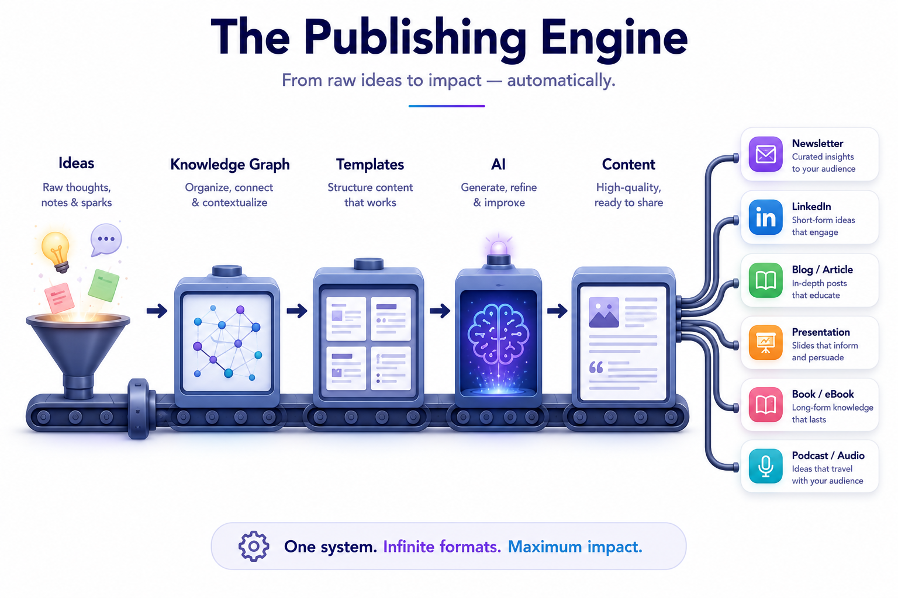
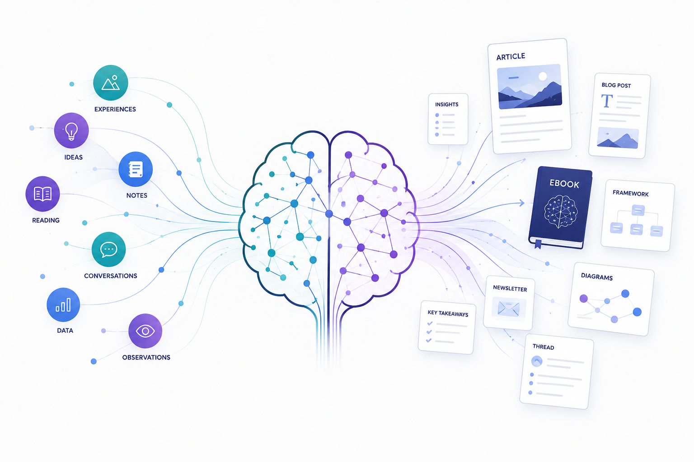

Two worlds that shouldn't touch
I had a curation engine and I needed a website. The engine lives in a database — venues, the evidence behind each recommendation, a scoring model, the photos I'd matched to each place. The website needed to be cheap, fast, and crawlable. And the obvious ways to connect the two are all bad.
Put the database behind the website and you're running a server forever, for content that changes once a week. Copy the content into the website by hand and you've created two sources of truth that will drift apart by the second edit. Reach for a CMS and you've added a third system that owns a copy of everything and a monthly bill to match.
The data world (where the thinking happens — SQL, scoring, the messy enrichment) and the web world (where the publishing happens) are genuinely different ecosystems. The mistake is letting them marry. What you want is one clean seam between them, crossed in exactly one direction.
The brain is the source; the site is a view
So I made a rule and held it: the database is the single source of truth, and everything on the site is derived from it at build time. Nothing the visitor sees is authored in the website. It's all a projection of the brain, regenerated on every publish.
The seam is a single build-time step: a small script runs the queries and writes one plain data file. The site reads that file and nothing else. The database never goes near the web toolchain; the web toolchain never learns SQL. One script, crossing the gap once, in one direction.

That gives you a property that's worth more than it sounds: the published site is reproducible from source on a clean machine. Wipe everything, rebuild the brain from its inputs, run the export, build the site — and you get byte-for-byte the same thing. There is no precious hand-tuned state living only in production, because production is a build artefact. If you can't delete it and regenerate it, you don't understand it.
The discipline that makes it work
The honest part is the constraint this imposes, and it's a good constraint. Because the site is regenerated from the brain every time, anything you change only in the published output is lost on the next build. There's no editing the live page. If you want a change, you change the source — the data, or the inputs that draft from it — and rebuild.
That sounds like a limitation until you've lived the alternative. The alternative is a website where someone fixed a typo directly in production two years ago, and now nobody can safely regenerate the site because they'll lose edits no one wrote down. Drift. The slow divergence between what your system says is true and what's actually deployed. The build-from-source rule makes drift structurally impossible: there is only one place to make a change, so there is only one truth.
The cost is real — a change needs a rebuild, not a live edit — and for editorial content on a weekly cadence, that cost is nothing. You trade per-request flexibility you don't need for reproducibility you can't get any other way.
Provenance is part of the data, not the decoration
One more thing the brain owns that a CMS would fumble: honesty about sources. A recommendation links to a booking only where a real partnership exists — otherwise the page shows an honest "no link yet" rather than a fabricated one. A photo is mine where I actually took one nearby, ranked above generic stock, and credited as my own. None of that is presentation logic bolted on at the end. It travels with the data, out of the same export, because provenance is a fact about the venue, not a styling choice. When the source of truth carries its own provenance, the published page can't quietly launder it.
The shape, not the stack
I'm deliberately not naming the database, the site generator, or the host, because the moment you fixate on those you've missed it. Swap any of them. The pattern survives, because the pattern isn't the tools — it's the shape:
One source of truth. One build-time seam. A published artefact you can always throw away and regenerate.

That's the same move as every other system I trust. The photos that became a queryable map and the books that became a knowledge base are both brains — structured sources you can ask questions of. This is just what happens when one of those brains needs to face the public: it doesn't get copied into a website. It projects one, on demand, from the truth it already holds.
A brain that publishes itself. The structure does the work; the site is only its shadow.